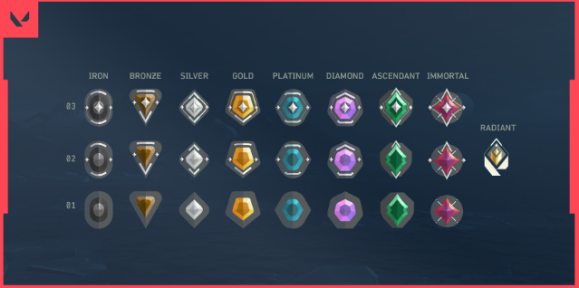
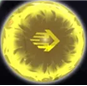
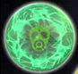
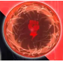
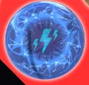
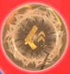
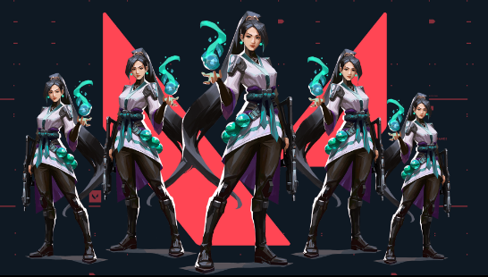
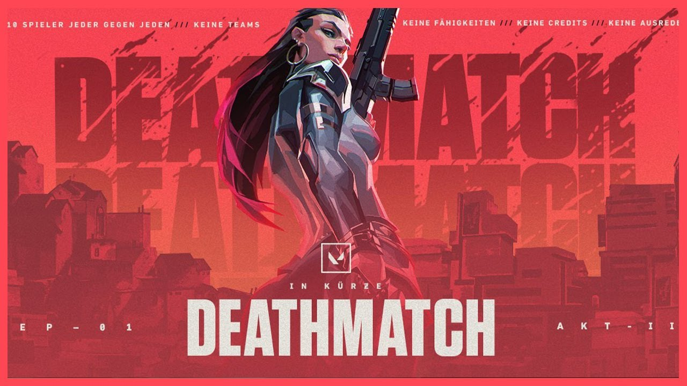

GAME MODES
UNRATED
The Unrated Game Mode in VALORANT is a standard Plant/Defuse mode where two teams play 12 rounds each on Attack or Defense, then switch sides. The game is won by the first team to reach 13 rounds (Best of 25). If the scoreline reaches 12-12, an additional Endgame round is played to determine the winner.
The Game Mode lasts for 30-40 minutes."
AGENT SELECT
Before a game in VALORANT, players must select their agent within 90 seconds during Agent Select. They can view descriptions and abilities of any agent they own and display their choice to their team. The player's choice is confirmed when they "Lock In" their agent and cannot be changed afterward. Each player must select a unique agent. If a player fails to lock in, the game will either automatically select their last chosen agent or cancel the match if no agent was selected.
GAMEPLAY
VALORANT gameplay consists of multiple rounds with three phases: Buy Phase, Round Phase, and Post-Round Phase. Teams play as either Attackers or Defenders for a half of twelve rounds, then switch sides for another twelve rounds. The objective for Attackers is to plant the spike or eliminate all Defenders, while the objective for Defenders is to prevent the spike from being planted or defuse it if it has been planted. Agents move at different speeds depending on their equipment and can run, walk, crouch, and jump. If a player disconnects at the beginning of the first buy phase through the entire first round, their team can call for a remake vote by typing /remake in chat. The vote must be unanimous to pass, and if successful, the match will end with no XP or MMR adjustments.
ROUNDS
Buying Phase
The Buy Phase lasts for 30 seconds with the exceptions of the first Buy Phases of a half or Endgame, which last for 45 seconds instead. At the start of every Buy Phase, players will spawn in the spawn areas for their team's side of the map, usually located at opposite edges of the map to the other team's spawn. The spike will also spawn in front of where the Attackers spawn.
Barriers of energy will be placed in some passageways and windows that prevent agents from moving into the central parts of the map and beyond into the other team's territory as well as preventing any abilities from being placed or thrown into these restricted areas. Spike sites will always be available for Defenders to access during the Buy Phase.
The Armory will be accessible to agents for the duration of the Buy Phase. In the armory, players will be able to use their creds to buy weapons, charges for their abilities, and shields. Players can also request for a teammate to use their own creds to buy a weapon for them.
Of the three types of interactive elements that can be found on maps, only door switches are unable to be used during the Buy Phase. Agents will still be able to view any lore elements and use any ascenders/ziplines if there are any within Buy Phase territories.
Round Phase
The Round Phase lasts for up to 100 seconds, which will be reset to 45 seconds if the spike is planted. At the start of a Round Phase, the Buy Phase barriers will go down, allowing all agents to freely travel to all parts of the map. Any door switches on a map will become available to use and any interactive lore elements will be deactivated until the next Buy Phase. The map's ultimate orbs will also spawn at this point.
If an agent dies, they will remain dead until either the next Buy Phase or being resurrected by Sage's Resurrection ultimate.
Agents will receive an ultimate point for any of the following occurrences:
The Round Phase will end when an outcome for the round is decided
Endgame
If the result of both halves being played to completion is a tied score of 12-12, a 25th round of Endgame, also known as Sudden Death, will begin to decide the match outcome. Teams will remain on the same sides they were on during the second half and all players will receive Creds 5,000 each. The team that wins the Endgame round will win the match.
COMPETITIVE
The VALORANT competitive mode is one of the most popular playlists in the game. Players enjoy testing their skills against similarly matched opponents and climbing into higher ranks. But many players don't understand how the ranked mode works and how the game determines their skill level.
Here's Everything you need to know about VALORANT's ranked mode
What are the requirements to play in Competitive mode?
Before unlocking the competitive mode, players must win 10 unrated matches and have an account level of 20. The criteria to unlock competitive mode requires more commitment and dedication, which should help eliminate smurfs and other problematic players.
When you've completed your initial 10 unrated wins, you then have to play five placement matches. This is designed to allow the game to figure out which rank a player belongs in based on their performance in these matches. If it's a new act, however, you only have to play one placement game to renew your ranking.
What's the difference between a Unrated mode and Competitive Mode?
Unrated is VALORANT's standard Plant/Defuse mode. Teams play 12 rounds on Attack or Defense, then swap to the other side for the next 12 rounds. The first to 13 rounds wins (Bo25), with a final Endgame round played should the game reach a 12-12 scoreline. When it comes to Competitive is a higher stakes version of Unrated where you play competitively against other players to earn and compete for a rank, there will be rank ratings that are affected and In-game Stats beside it.
RANK RATINGS
Rank Rating (or RR for short) represents a visual way to track your progress as you climb and work different for ranks Iron through Ascendant than it does for Immortal and Radiant ranks. To learn more about each, follow the links below.
TIERS AND DIVISIONS
VALORANT has eight ranks (or divisions). There's Iron, Bronze, Silver, Gold, Platinum, Diamond, Immortal, and the highest rank, Radiant. The highest rank used to be called VALORANT, but Riot changed its name after community backlash. At the beginning of Episode Five, Act One, a new rank called Ascendant will be added above Diamond and below Immortal.
Each rank has three tiers that you progress through. Iron One (for example) is the lowest tier in the Iron division, while Iron Three is the highest. When you're done with Iron Three, you'll promote to Bronze One (or potentially higher). Radiant, though, has just one tier.
“Winning games is the most important factor in gaining rank,” according to Riot. But performing “exceptionally well” can help you rank up faster.
Playing Competitive with a group of friends?
Yes! You can queue up with friends even if they have a fairly large skill discrepancy... at least, to a point. If you're playing in a group of 2 or 3 players, you'll only be able to join a Competitive match with friends within a specific rank range. Check out the breakdown below:
For parties of 2 or 3, players can queue within certain ranked disparity restrictions:
Parties of 5 (5-stacks) can ignore the above chart, as they are not bound by any ranked restrictions. However, 5-stacks of Iron-Ascendant players will receive RR penalties if any players are ranked outside of a normal party restriction. (For example, a 5-stack of all Silver and Gold players will not receive RR penalties. A 5-stack of Silver, Gold, and Ascendant players will receive an RR penalty.)
Groups of 3 players or less must meet the skill disparity requirements listed above. Four-player groups are not allowed, as it tends to leave the remaining solo queue player on the team with a less-then-desirable experience.
Players in Immortal 1 and above can only solo, duo, or 5-stack
What if I queue up with a full party?
As mentioned earlier, full parties of 5 are allowed with no ranked restrictions. That means you can play with 4 of your friends no matter what your skill levels are. You could have a team of 3 Irons and 2 Ascendants as long as you queue up and play together as a party of 5.
That being said, 5-stacks follow an adjusted ruleset given the potential disparity in rank for the players in the team.
SWIFTPLAY
Swiftplay is a 5v5 Bo9 Plant/Defuse mode. It has most of the same gameplay rules as Unrated, but shortened. Swiftplay has an estimated game time of 10-15 minutes and grants the same amount of XP as Unrated (100 XP per round plus 200 XP for every won round).
How it works
Valorant Swiftplay does not count toward your Competitive ranking and it is very similar to Unrated. However, the match time is significantly reduced thanks to fewer rounds, faster Ultimates and more credit availability.
The game has your typical 5v5 gameplay in a condensed format. The first team to win five rounds wins and each time has a four-round half where it defends for four rounds and attacks for four rounds.
There is a set amount of credits that is awarded at the start of rounds:
The 2400 Credit rounds can drop an additional 600 Credits if you are on the team that wins the pistol round. Weapon and Credit carryover is supported in the format which makes staying alive even more important and it is possible to steamroll your opponents once you gain some momentum.
There are standard kill bonuses (+200 Credits) and Spike Plant bonuses (+300 Credits). The game also speeds up the Ultimate economy with two Ultimate points being granted at the start of each half. There is a sudden-death overtime mode which is different from how extra rounds are handled in Unrated and Competitive.
SPIKERUSH
Spike Rush is a Bo7(best of 7)5v5 mode where all players start each round with the same random weapon. Random orbs spawn around the map that players can collect to grant buff for themselves and/or their teammates or afflict enemies with debuffs.
This mode lasts for 8-12 minutes and grants 1000 XP for completing the game.
This may look like a normal unrated game but with a twist of random orbs spawning every start of the round with random spawn places.
The Power Orbs

Combat Stim orb: It deploys a beacon that grants increased combat power to nearby players. Combat powers that is included are increase in fire rate, equip speed, reload speed, recovery speed, movement speed and jump height>

Crippling Decay orb: After a brief delay of taking the orb. All enemies will take 50 temporary damage to their maximum heath for 8 seconds.

Damage Amp orb: the player who took the orb will get 30% damage amplification for the round. Which increases all damage dealt from the player till the round ends.

Ultimate Ability orb: The orb fully charges the player's ultimate ability who took the orb.

Weapon Upgrade orb: it grants the player a more powerful weapon. Equips the player with a more powerful weapon than the one they currently hold. If the weapon of choice this round is an Operator, this orb will instead give an additional sidearm (excluding Golden Gun) for the player to equip
REPLICATION
Replication is 5v5 Bo9(Best of 9) mode where all players on a team play as the same agent. Players vote for an agent they want to play and the game then randomly selects one of the choices. Replication has an estimated game time of 10-15 minutes and grants the same amount of XP as Unrated (100 XP per round plus 200 XP for every won round).

Replication is 5v5 Bo9 mode where all players on a team play as the same agent. Players vote for an agent they want to play and the game then randomly selects one of the choices. Replication has an estimated game time of 10-15 minutes and grants the same amount of XP as Unrated (100 XP per round plus 200 XP for every won round).
Replication was released in May of 2021 and remained one of the most popular game modes because of its uniqueness. If you'd like to know more, then be sure to stick around, as we're going to cover all aspects of this game mode right here in this article. Let's get into it.
Choosing Agents
The agent that your entire team plays is decided through a voting system in the pre-game phase. Here, every player gets one vote and can pick any character that they have unlocked. Once everyone has locked in their votes, a random character is chosen, and the game then begins.
Round Structure
The structure of Replication is similar to Unrated and Competitive, but there are only 4 rounds per half instead of 12. The first team to win 5 rounds is crowned victorious, so expect relatively short games compared to what you might be used to. Also, if the score reaches 4-4 at the end of round 8, the game doesn't go into overtime. Instead, it goes into sudden death, where the winner takes all.
DEATHMATCH
The free-for-all deathmatch mode will feature 10 players per game, the same as a standard Valorant match, with the first player to reach 30 kills wins. However, unlike a normal round of Valorant, deathmatch will not include any abilities but instead focus on gunplay with unlimited credits for weapons every time a player spawns.Players spawn in with a random agent as well as full shields, and all abilities are disabled during the match which indulges pure gunplay. Green health packs drop on every kill, which reset the player to maximum health, armor, and give an additional 30 bullets to each of their guns.Another notable detail about deathmatch is health packs, which will drop whenever players are killed. The mode's minimap will also reveal the locations of nearby enemy players every five seconds. According to Riot, per PC Gamer, the goal of the mode is to “keep people moving and aggressive”.
Deathmatch grants 900 XP for completing the game, but cannot be used to complete missions. Deathmatch is the only game mode where players are given the option to leave during the game and can do so without penalty, though they will not receive any XP from the match.